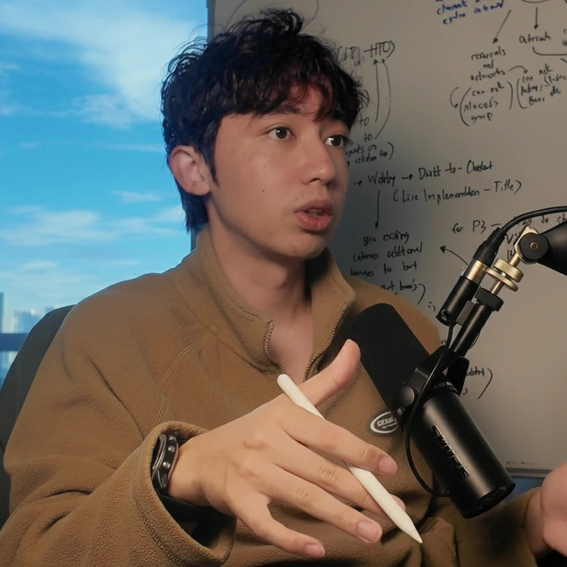
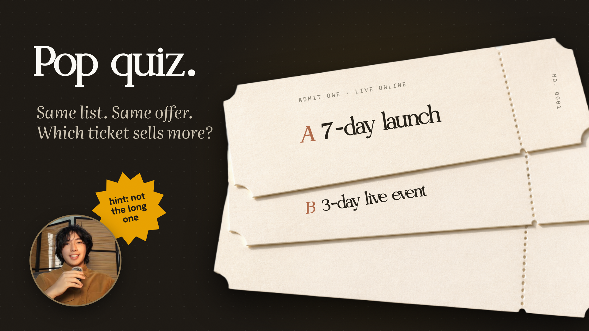

for creators with a list
Why does
every launch
feel like
begging?

today, in three parts
Where we are.
PART 01
Where it leaks
the launch, step by step
NO. 0001
PART 02 · NOW
The 3-day event
what to run instead
NO. 0002
PART 03
Your numbers
the plan for yours
NO. 0003
02
chapter two
The 3-day
event.
PART 02 OF 03
But
the list was
never the
problem.
The seven-day launch was.
Jay Clouse, nine years in
$100K
His first $100,000+ launch, in his own words.
x.com/jayclouse · 9:45 PM · 7/9/26
step 3:
Get the plan.
Your list, your offer, your numbers. Back in 24 to 48 hours.
theafterharvest.com
proof
01
JC
Jay Clouse
@jayclouse
It took nine years, but we just had our
first $100,000+ launch.
9:45 PM · 7/9/26 ·
16K
Views
63
replies
217
likes
JC
Jay Clouse
8:47 AM
we did! about 30 mins ago
Sean Canela
8:51 AM
let’s go!!!!
a launch
Seven days
of emails.
an event
Three days,
live.
why events sell more
1
People show up
for a date.
2
Live beats
recorded.
They watch you teach, then they trust the offer.
3
Three days earn
one decision.
“
It took nine years, but we just had our first $100,000+ launch.
JC
Jay Clouse
x.com/jayclouse · 7/9/26
story time
The morning Jay
messaged me.
8:47 AM: “we did! about 30 mins ago”

so the answer is
the event.
Same month, two plans.
a 7-day launch
a 3-day live event
January 2027
YOUR CALENDAR
MON
TUE
WED
THU
FRI
SAT
SUN
Watch this next.
Or get the free 3-day plan at
theafterharvest.com
end screen · video
end screen · video